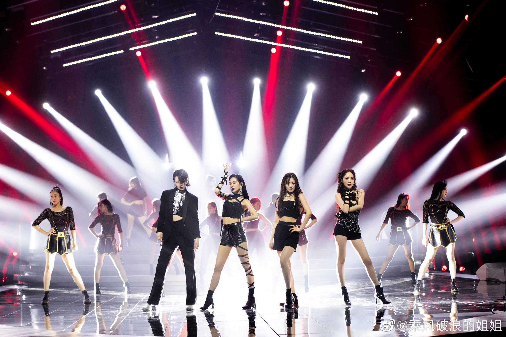
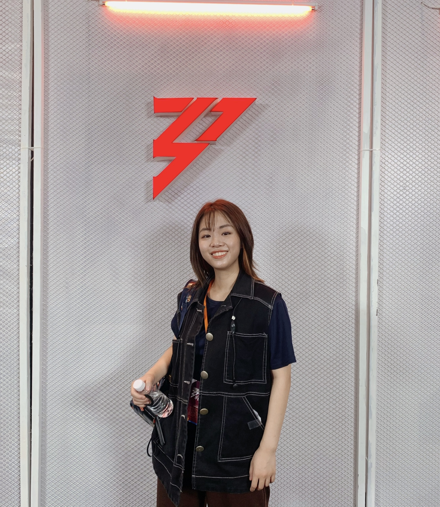

Live Production · Reality Show · Culture-Led Commerce
Sisters Who Make Waves · S1
One of China’s most-watched reality formats — built to run live, flawlessly, every week.
The Brief
One of China's biggest reality formats every broadcast must land flawlessly.
A tentpole reality show is a commercial engine: ratings, sponsors, and social buzz all ride on the live broadcast going perfectly — on camera, on the LED wall, and in the room, all at once. With no second take and a new episode every week, the challenge wasn't one great look; it was making "flawless" repeatable.
The Move
Design the system, not the episode.
Rather than art-direct every episode from scratch, the show was built as a system — cue sheets, screen-content specs, and stage-to-broadcast handoffs that anyone on the team could run. The visual identity stayed consistent while the machine behind it scaled to weekly delivery.

How it worked
I contributed stage-visual concepts — light-and-shadow, mirror-light, drone-integrated, and character-driven performance directions — then turned them into the documents the live show actually ran on: cue sheets, copywriting, visual references, and sample-edit materials for multiple performance scenes. Across rehearsals and live production I coordinated with the directing, camera, lighting, visual-technology, props, and audio teams so every cue landed on air, on time.


Impact
- Best Online Variety Show — 4th 网影盛典 (China Internet Film & TV Gala)
- Format adapted for Vietnam's VTV3 — #1 in its prime-time slot, a national variety sponsorship record
- Studied as a phenomenon — from Jing Daily's brand-strategy feature to a Master's thesis on gender in Chinese media
It reset how China talks about women over 30 — and got studied in gender research, not just streamed.
Credit
- Mango TV · Zhejiang Keyi Communication & Media Co., Ltd